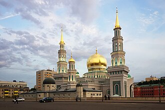

Voorstelling
La mosquée-cathédrale de Moscou est la mosquée principale de la ville de Moscou, en Russie. Inaugurée en 1904 pour la communauté tatare, démolie en 2011 puis totalement reconstruite en 2015, elle est la plus grande mosquée d'Europe. Elle est vaste de 19 000 m2 et peut accueillir jusqu'à 10 000 personnes.
مسجد موسكو الجامع ، مسكوفسكيا سَبورنايا مِتشيت، ويسمى كذلك جامع موسكو الكبير هو المسجد الرئيسي في موسكو، عاصمة روسيا. يقع في رواق أولمبسكي، بالقرب من الاستاد الأولمبي المغلق في مركز المدينة. وهو أكبر مسجد في أوروبا، إذ يتسع لعشرة آلاف مصل في وقت واحد.
Moscow Cathedral Mosque is the main mosque of Moscow, Russia. It is located on Olimpiysky Avenue, close to the Olympic Stadium in the centre of the city.
Moskova Ulu Camii ya da Moskova Merkez Camii, Yapımı 1894-1904 rekonstrüksiyonu da 2011-2015'te yapılan Moskova'nın en büyük camisidir.
Masjid Katedral Moskow adalah sebuah masjid utama di Moskow, sekaligus menjadi salah satu masjid terbesar dan tertinggi di Rusia dan terluas di Eropa. Bangunan masjid pertama dibangun pada tahun 1904, kemudian pada tahun 2011 dibongkar untuk membangun yang baru, pembukaannya berlangsung pada 23 September 2015. Masjid ini terletak di Distrik Meshchansky di Jalan Pereulok Vypolzov, atau dekat dengan Jalan Durova dan Jalan Olympiysky Prospekt di sebelah Kompleks Stadion Olimpiade dan Stasiun Metro Prospekt Mira.
ماسکو جامِعَ مَسجِد روس کی ایک جامع مسجد، جو ماسکو میں واقع ہے۔
Die Moskauer Kathedralmoschee ist die Hauptmoschee (Freitagsmoschee) in Russlands Hauptstadt Moskau. Sie wurde schon 1904 gegründet, das heutige Bauwerk wurde in den Jahren 2007 bis 2015 errichtet. Erster Imam ist Rawil Ismagilowitsch Gainutdin, Präsident des Russischen Muftirats und der Geistlichen Verwaltung der Muslime der Russischen Föderation, die in den Räumlichkeiten der Moschee ihren Sitz hat.
La moschea-cattedrale di Mosca è la principale moschea della città di Mosca ed è ubicata vicino al complesso sportivo "Olimpijskij" nella Olimpiysky Avenue.
Московская соборная мечеть — главная джума-мечеть Москвы, одна из крупнейших и высочайших мечетей в России и наиболее вместительная в Европе. Первое здание мечети построено в 1904 году, в 2011 году оно было снесено для строительства нового, открытие которого состоялось 23 сентября 2015 года. Мечеть расположена в Мещанском районе в Выползовом переулке у улицы Дурова и Олимпийского проспекта рядом со спортивным комплексом «Олимпийский» и станцией метро «Проспект Мира».
Moskvas katedralmoské är en moské i Rysslands huvudstad Moskva och en av de största moskéerna i Europa.
Op de kaart
Documenten en links
- Wikipédia — Français
- Wikipédia — العربية
- Wikipédia — English
- Wikipédia — Türkçe
- Wikipédia — Bahasa Indonesia
- Wikipédia — اردو
- Wikipédia — Deutsch
- Wikipédia — Italiano
- Wikipédia — 中文
- Wikipédia — Русский
- Wikipédia — Svenska
- Wikidata — Q3679864
Gegevens: Wikidata (CC0), elke 3 maanden bijgewerkt. Het jaar is de oudst bekende bouwdatum van het gebouw: voor een gebouw dat later een moskee werd (zoals de Hagia Sophia), is het die van het oorspronkelijke gebouw. Foto's: Wikimedia Commons, maker en licentie op de pagina van elke foto.